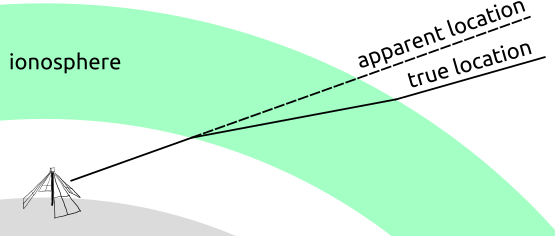

The Ionosphere¶
Note that the TEC of the model ionosphere is currently hard coded to zero inside TTCal.
Refraction¶
The index of refraction of a cold, collisionless, and unmagnetized plasma is
where $\omega_p$ is the plasma frequency and $\omega = 2\pi\nu$ is the angular frequency of the incident radiation.
TTCal models the ionosphere as a single uniform spherical shell. That is it does not account for the fact that ionosphere has multiple layers or that the density can vary within a layer. However with this simplification the refraction off the inner and outer edges of the ionosphere can be calculated with a simple ray tracer (see the diagram below).
| Figure 1. An illustration of the ray tracing procedure used by TTCal to model ionospheric refraction. |
|---|
|  |
Absorption¶
Ionospheric absorption is not currently accounted for.